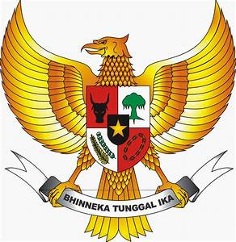

Single Picture

Picture with Text
Bahwa sesungguhnya Kemerdekaan itu ialah hak segala bangsa dan oleh sebab itu, maka penjajahan di atas dunia harus dihapuskan, karena tidak sesuai dengan perikemanusiaan dan perikeadilan.
Dan perjuangan pergerakan kemerdekaan Indonesia telah sampailah kepada saat yang berbahagia dengan selamat sentausa mengantarkan rakyat Indonesia ke depan pintu gerbang kemerdekaan Negara Indonesia, yang merdeka, bersatu, berdaulat, adil dan makmur.
Atas berkat rakhmat Allah Yang Maha Kuasa dan dengan didorongkan oleh keinginan luhur, supaya berkehidupan kebangsaan yang bebas, maka rakyat Indonesia menyatakan dengan ini kemerdekaannya.
Kemudian daripada itu untuk membentuk suatu Pemerintah Negara Indonesia yang melindungi segenap bangsa Indonesia dan seluruh tumpah darah Indonesia dan untuk memajukan kesejahteraan umum, mencerdaskan kehidupan bangsa, dan ikut melaksanakan ketertiban dunia yang berdasarkan kemerdekaan, perdamaian abadi dan keadilan sosial, maka disusunlah Kemerdekaan Kebangsaan Indonesia itu dalam suatu Undang-Undang Dasar Negara Indonesia, yang terbentuk dalam suatu susunan Negara Republik Indonesia yang berkedaulatan rakyat dengan berdasar kepada Ketuhanan Yang Maha Esa, Kemanusiaan yang adil dan beradab, Persatuan Indonesia dan Kerakyatan yang dipimpin oleh hikmat kebijaksanaan dalam Permusyawaratan/Perwakilan, serta dengan mewujudkan suatu Keadilan sosial bagi seluruh rakyat Indonesia